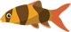

<ion-content>
  <div id="ionball"></div>
  
  <div class="fish" id="fish">
    <div id="fish2">
      
    </div>
    <div id="fish1">
      
    </div>
    <div id="fish3">
      
    </div>
  </div>
  <div class="fish2" id="fishRight">
    <div id="fish5">
      
    </div>
    <div id="fish6">
      
    </div>
    <div id="fish4">
      
    </div>
  </div>
  <div id="bubbles">
    <div class="bubble x1">
      
    </div>
    <div class="bubble x2">
            
    </div>
    <div class="bubble x3">
            
    </div>
    <div class="bubble x4">
                  
    </div>
    <div class="bubble x5">
      
    </div>
    <div class="bubble x6">
                  
    </div>
    <div class="bubble x7">
      
    </div>
    <div class="bubble x8">
                  
    </div>
    <div class="bubble x9">
      
    </div>
  </div>
<!--   <ion-fab right top samll>
    <button ion-fab color="light"><ion-icon name="switch"></ion-icon></button>
  </ion-fab>

  <ion-fab left top samll>
    <button ion-fab color="light"><ion-icon name="exit"></ion-icon></button>
  </ion-fab>

  <ion-fab right bottom samll>
    <button (click)="refresh()" ion-fab color="light"><ion-icon name="archive"></ion-icon></button>
  </ion-fab> -->
  <ion-fab bottom center samll>
    <button ion-fab color="danger" *ngIf="buttonvisible" (click)="takePhoto()"></button>
  </ion-fab>
<!--   <ion-fab left top samll>
      <button (click)="takeScreenshotGetUri()" *ngIf="!state" ion-fab color="light">URI</button>
    </ion-fab> -->
  <!-- <ion-fab left bottom samll>
    <button (click)="subiryparticipar()" *ngIf="state" ion-fab color="light">SUBIR</button>
  </ion-fab> -->
<!--   <ion-fab right bottom samll>
    <button (click)="descartar()" *ngIf="state" ion-fab color="light">DESCARTAR</button>
  </ion-fab> -->
  <!-- <ion-fab left bottom samll>
    <button (click)="descargar()" *ngIf="state" ion-fab color="light">BAJAR</button>
  </ion-fab> -->
</ion-content>